Tutorial Membuat Game di Roblox Studio
Koding Akademi
1. Memilih Template Classic Obby
Langkah pertama adalah membuka Roblox Studio dan memilih template Classic Obby. Template ini menyediakan kerangka dasar berupa lintasan rintangan (obstacle course) yang sudah siap dimodifikasi, lengkap dengan titik spawn dan checkpoint dasar.
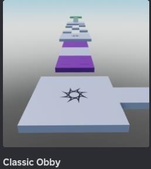
2. Mengenal Workspace Editor
Setelah template terbuka, Anda akan melihat tampilan Workspace utama Roblox Studio. Di sini terdapat seluruh desain lintasan permainan, panel Toolbox di sisi kiri untuk mencari model siap pakai, serta Terrain Editor untuk mengelola medan permainan.
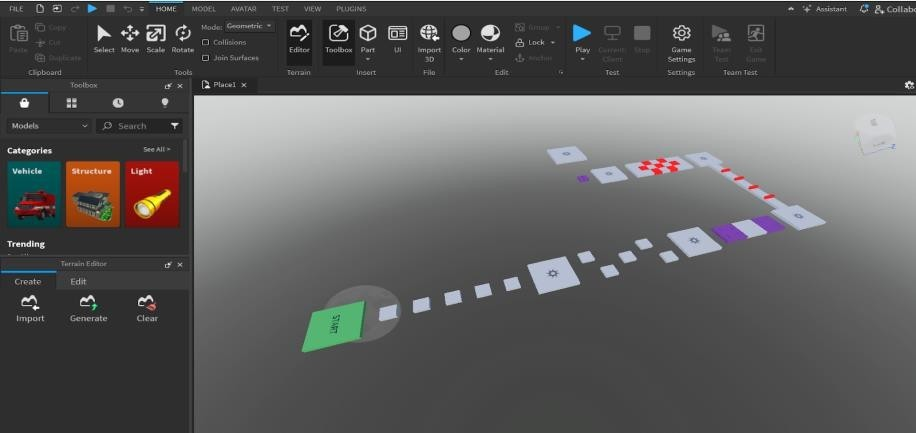
3. Menambahkan Part Baru
Untuk membuat rintangan kustom, klik menu Part pada toolbar. Terdapat beberapa tipe Part yang bisa dipilih: Block (balok), Sphere (bola), Wedge (segitiga miring), Corner Wedge, dan Cylinder (tabung). Part inilah yang menjadi fondasi dasar dari seluruh rintangan dalam game.
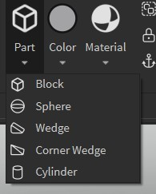
4. Menggunakan Transform Tools
Pindah ke tab MODEL untuk mengakses alat manipulasi objek. Gunakan Select, Move, Scale, dan Rotate untuk mengatur posisi dan ukuran Part. Aktifkan fitur Snapping agar pergerakan objek lebih presisi, misalnya Rotate 45° dan Move 1 studs.
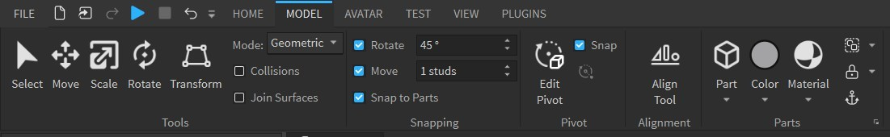
5. Mengelola Objek di Explorer
Panel Explorer di sisi kanan menampilkan hierarki seluruh objek dalam game. Kelompokkan rintangan ke dalam folder yang rapi seperti Checkpoints, Conveyors, KillBricks, ObbyStructure, Trampolines, dan StartSpawn. Di toolbar atas, Anda juga bisa menggunakan fitur Solid Modeling (Union, Intersect, Negate) untuk menggabungkan Part.
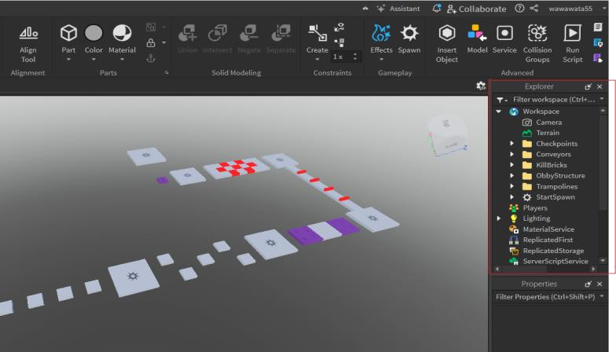
6. Mengubah Warna dan Material Part
Klik Part yang ingin diwarnai, lalu buka Color Picker melalui panel Properties. Anda bisa memilih warna dari palet dasar, memasukkan kode warna Hex secara manual, atau menggunakan gradient picker untuk warna kustom. Selain warna, material Part juga bisa diubah menjadi Plastic, Wood, Metal, dan lainnya.
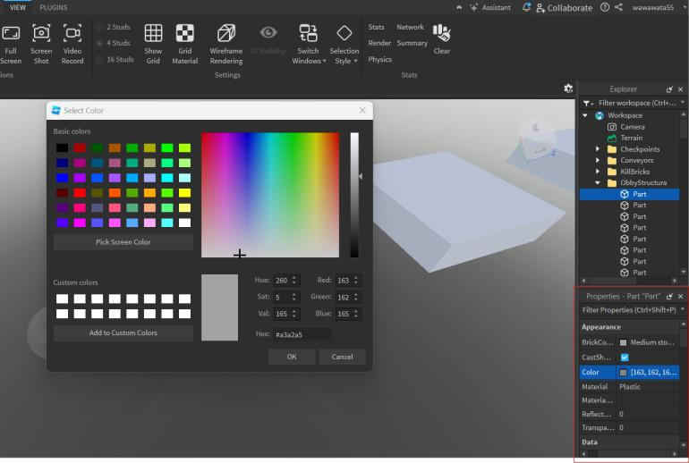
7. Menambahkan Objek via Insert Object
Klik kanan pada Workspace di panel Explorer, lalu pilih Insert Object. Di sini Anda bisa mencari dan menambahkan berbagai komponen seperti Part, Script, Folder, SpawnLocation, Model, serta komponen 3D Interfaces seperti ClickDetector dan Decal.
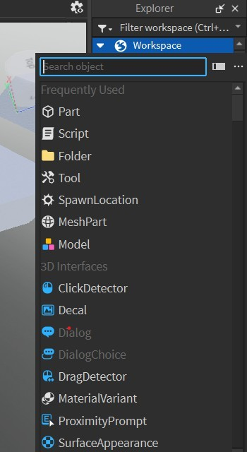
8. Menambahkan Sound Effect
Untuk membuat game lebih interaktif, tambahkan efek suara melalui Insert Object → Sound. Roblox Studio menyediakan berbagai jenis audio seperti Sound, SoundGroup, serta efek audio lanjutan seperti ChorusSoundEffect, EchoSoundEffect, ReverbSoundEffect, dan lainnya.
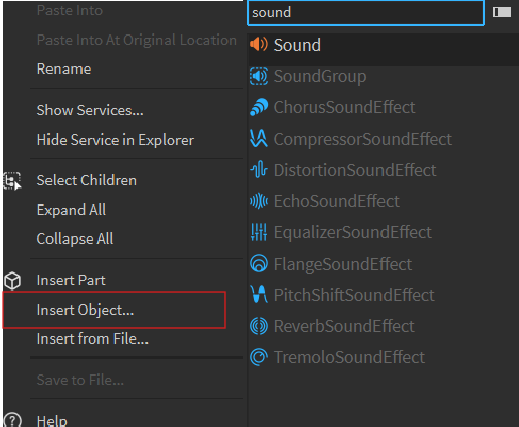
9. Publish Game ke Roblox
Setelah game selesai dibuat, buka menu FILE → Publish to Roblox (shortcut Alt+P) untuk mengunggah game ke platform Roblox. Anda juga bisa menyimpan secara lokal melalui Save to File atau langsung ke cloud Roblox.
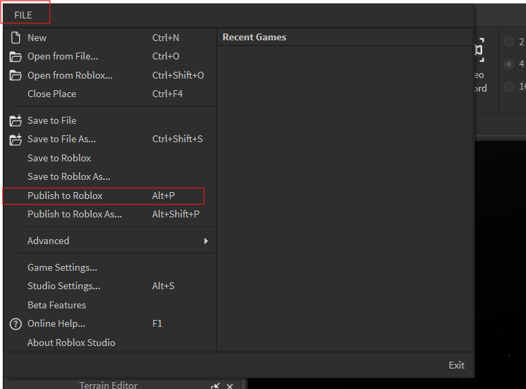
10. Mengisi Informasi Game
Pada jendela Publish Game, isi nama game (contoh: "obby"), deskripsi, pilih Creator, dan tentukan perangkat target (Computer, Tablet, Phone, VR, atau Console). Aktifkan Team Create jika ingin berkolaborasi dengan tim secara real-time melalui cloud.
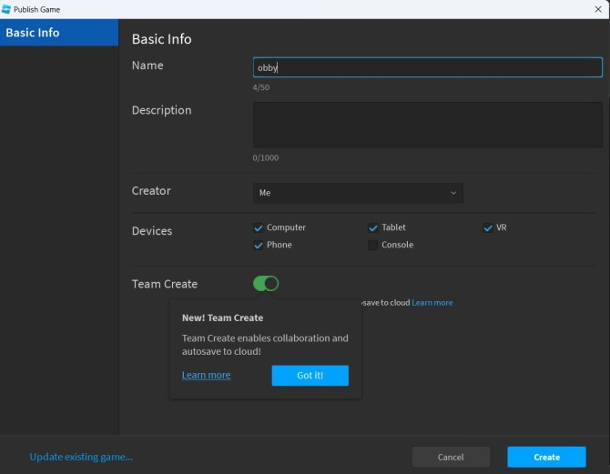
11. Membuka Game Settings
Setelah game dipublish, buka FILE → Game Settings untuk mengatur pengaturan lanjutan seperti izin akses, monetisasi, lokalisasi bahasa, dan konfigurasi avatar pemain. Menu ini juga menampilkan daftar Recent Games yang pernah Anda buat.
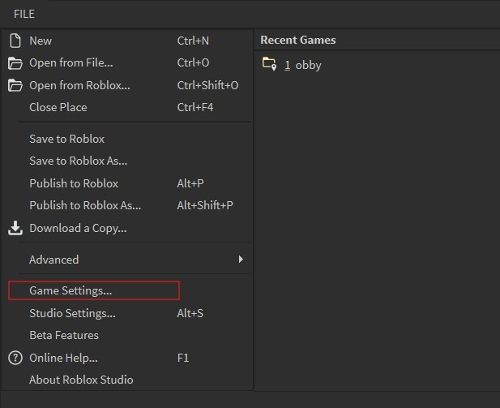
12. Mengatur Permissions & Playability
Di dalam Game Settings → Permissions, atur siapa yang boleh memainkan game Anda. Pilih Friends (hanya teman), Public (semua orang di Roblox), atau Private (hanya developer). Setelah semua pengaturan selesai, klik Save dan game Anda siap dimainkan!
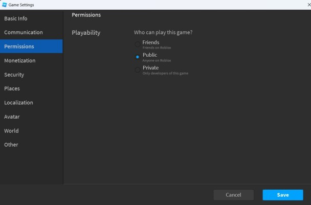